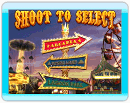

Chaque parc d’attractions possède quatre parties dont le but commun est de tirer sur des cibles le plus rapidement et le plus précisément possible.
ARCADIA
- Knock 'Em Over – Renversez les séries de chats poilus, mais ne tirez pas sur leur fourrure, sinon ils ne bougeront pas.
- Cluster Buster – Amassez des groupes de ballons colorés avant de tirer sur ceux-ci pour obtenir le meilleur pointage.
- Shooting Gallery – Tirez sur les cibles sur les poissons, les canards, les renards, les écureuils, les lapins, les mouffettes, les ours, les oiseaux et les hiboux.
- Shoot the Star – Tirez sur l’étoile qui se déplace sur le rail. Vous n’obtenez aucun point pour avoir déchiré le papier.
DREAMLAND
- Saloon Shoot – Renversez les bouteilles qui apparaissent sur le tapis roulant des portes de droite et de gauche.
- Haunted Hunt – Tirez sur les araignées, les citrouilles, les ombres, les fantômes, les loups-garous, les sorcières, les crânes et les chauves-souris pour obtenir un pointage horriblement élevé.
- Stop the Robots – Tirez sur les vagues de robots colorés bleus, verts et rouges avant qu’ils n’atterrissent sur une plateforme devant vous et volent votre temps.
- Balloon Wheel – Tirez sur les ballons colorés dans l’ordre prescrit par les signes à la droite et à la gauche de la roue.
LAGOON PARK
- Mouse Hunt – Touchez une souris pour un pointage moins élevé.
- Bullseye Canyon – Touchez les cibles, mais non les transports terrien, aérien et maritime.
- Animal Match – Tirez sur les animaux en paires identiques pour obtenir le pointage le plus élevé.
- Quick Draw – Tirez sur le centre rouge des cibles avant qu’elles ne disparaissent pour obtenir le meilleur pointage.